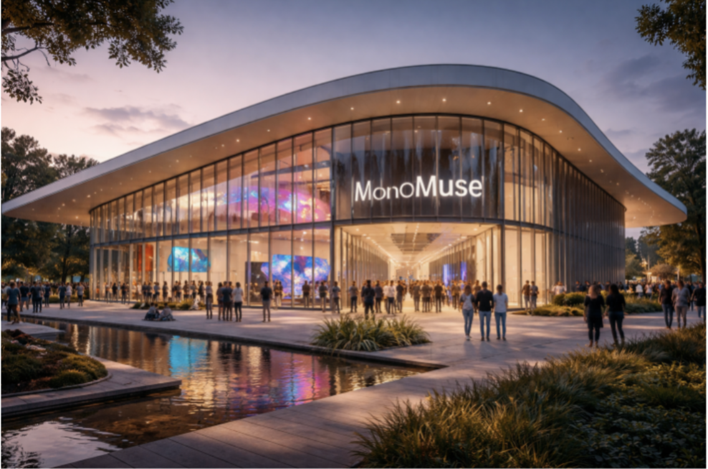

<!DOCTYPE html>
<html lang="en"></html>
<head>
    <meta charset="UTF-8">
    <meta name="viewport" content="width=device-width, initial-scale=1.0">
    <meta name="author" content="Dylan Yang">
    <meta name="keywords" content="Museum, Carnegie Mellon University, Information Systems">
    <meta name="description" content="MonoMuse website redesign project">
    <title>Explore - MonoMuse</title>
    <link rel="stylesheet" href="../styles.css">
</head>
<body>
    <header>
        <h1>MonoMuse</h1>
        <nav>
            <a href="../index.html">Home</a>
            <a href="explore.html">Explore</a>
            <a href="exhibitions.html">Exhibitions</a>
            <a href="tickets.html">Tickets</a>
            <a href="checkout.html">Checkout</a>
        </nav>
    </header>
    <div class="main">
        <h2>Explore MonoMuse</h2>
        
        <p>At MonoMuse, we are dedicated to fostering a deeper understanding and appreciation of the intersection between art, technology, and human creativity. Our mission is to inspire curiosity and creativity through immersive exhibitions, interactive installations, and educational programs that explore how digital innovation is transforming the way we create, experience, and understand art.</p>
        <ul>
            <li><strong>Who We Serve:</strong> We welcome visitors of all ages and backgrounds, including art enthusiasts, technology lovers, students, educators, and families. Our exhibitions and programs are designed to engage a diverse audience and provide meaningful experiences for everyone.</li>
            <li><strong>Founding Year:</strong> MonoMuse was founded in 2020 with the vision of creating a space where art and technology converge to inspire creativity and innovation.</li>
            <li><strong>Milestones:</strong> Since our founding, we have hosted over 20 exhibitions, welcomed more than 100,000 visitors, and collaborated with artists and technologists from around the world to create groundbreaking installations that challenge traditional notions of art.</li>
        </ul>
    </div>
    <footer>
        <p>&copy; 2026 MonoMuse. All rights reserved.</p>
    </footer>